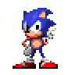
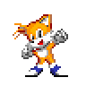
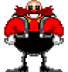

Blueshift
It's only me! Heh...
Characters/OCs

It's only me! Heh...

Alex Wilson ; With the vessel of Miles " Tails " Prower is My newest pawn . He is always optimistic and thinks he can get out of here . How hilarious ! wouldn' t you agree ?
Scott Garcia has been gifted with the vessel of Sonic . He is My favorite pawn ; He thinks he can break the rules i make ! Pathetic , but interesting.

Anthony Rivera ; inhabiting the vessel of Doctor Robotnik , moreso known as " Eggman " is an idiot . He has never outsmarted me . Never . I Would never lie to you .
Music name - File Select from Sonic The Hedgehog 3